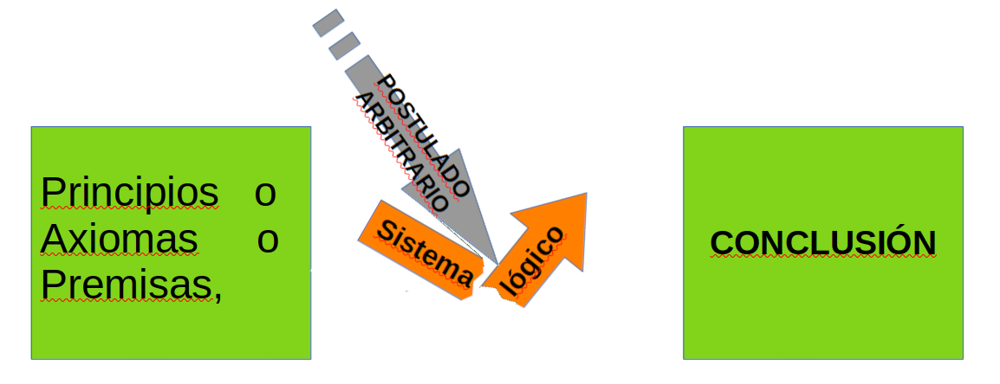

El uso de la Lógica en el análisis Biblico.
Enunciados Lógicos:
Definición aristotélica
Un postulado era una proposición asumida sin prueba para desarrollar una teoría. Se enuncia por que es útil.
En cambio axiomaes una proposición aceptada como evidente por sí misma, sin necesidad de demostración..
Dada
una cantidad de Principios Fundamentales (no discutibles) , si se
interpone en un sistema lógico un postulado (arbitrario) , este
puede ocultar o distorsionar
la conclusión lógica natural
que se derivaría de los principios originales. El Principio Fundamental
no es un axioma ya que no se enuncia nunca por una necesidad.

(la premisa y el axioma son refutables).
Aplicación al texto Bíblico.
Con el fin de facilitar la interpretación de los textos
Bíblicos, contamos con TÉRMINOS, de manera de separar lo bíblico
literal de las ideas humanas que usamos para comunicarlos.
UNA
DECLARACIÓN bíblica es una afirmación que se encuentra en forma
literal en la mejor versión posible del texto. Aquí es equivalente
a Principio Fundamental.
En cambio ,UNA DEFINICIÓN es una construcción, que requiere un proceso
lógico para hacer el "enunciado" de un Principio basado en el
texto bíblico.
De esta manera reconocemos la brecha entre el
texto bíblico y cualquier idea humana asociada.
O sea:
Salvo que repitamos el texto bíblico tal cual, si lo explicamos
,traducimos o definimos , siempre cometemos al menos un pequeño
error.
Lo cometemos más cuando:resumimos ,simplificamos y hacemos
postulados.
En el mejor de los casos son errores de método.En el peor de los casos , los
tildan de HEREJÍAS.
Más allá de las opiniones de los demás,
minimizar estos errores va en nuestro beneficio y el de quienes nos
escuchan.
Ejercicio Lógico:
Una
Conclusión sobre un principio o declaración biblica , "no es lo mismo
que un postulado"..
EJEMPLO:,1Juan 4:.7 ,
Principio (en forma de premisa): "Todo aquel que ama ha nacido de
Dios y conoce a Dios".
Conclusión:Amémonos unos a otros.
Todo aquel que ama, ha nacido de Dios y conoce a Dios.